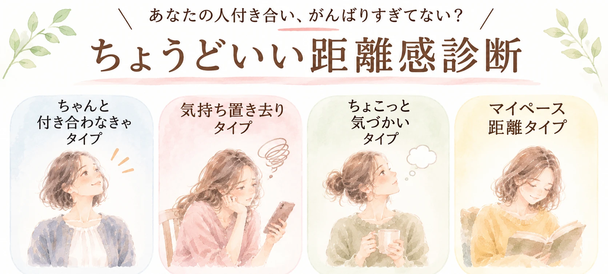
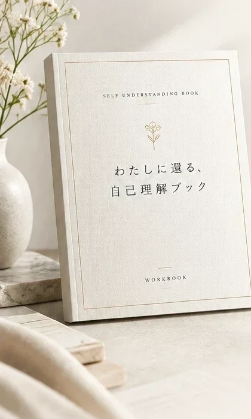

ママ友が嫌いなわけじゃない。
なのに、会うと疲れる。
ママ友の輪に入れなかったことより、
入れない自分を責めるほうが、ずっと疲れる。
みんなと仲良くできなくても、
あなたは、あなたのままでいい。
人の得意を、自分の宿題にしなくてもいいんです。
まずは、自分がどんな場面で無理をしているのか、ちょっと知ってみませんか。

無料・8問でわかる
「ちょうどいい距離感」診断
人付き合いで頑張りすぎてしまうあなたが、自分らしい距離感を考えるための、小さなきっかけです。
無料で私の距離感タイプを診断する※お名前とメールアドレスの入力が必要です。診断結果はメールで届きます。お申し込みと同時に公式メルマガにも登録され、週1回程度、りさの近況や最新のお知らせなどをお届けします。
幼稚園に行くのは子どもなのに、緊張しているのは私。
お迎えの時間。
いつものように、何人かのお母さんたちが輪になって話している。
「あ、こんにちは」
笑顔で挨拶はできた。
でも、そのあと何を話せばいいのかわからない。
途中から会話に入るのも気まずいし、一人だけ離れているのも、なんとなく落ち着かない。
結局、少し離れたところで子どもが出てくるのを待っている。
そして帰り道。
「あのとき、もう少し話しかければよかったかな」
「感じ悪いと思われてないかな」
「ほかのお母さんたちは、あんなに楽しそうなのに」
たった数分の出来事なのに、家に帰ってからも考えてしまう。
でも、本当は。
毎日ランチに行くようなママ友が、たくさん欲しいわけじゃない。
みんなと同じ話題で盛り上がりたいわけでもない。
ただ、子どものための付き合いを、もう少し気楽にできたらいい。
それだけなんですよね。
なのに、いつの間にか、
「人付き合いが苦手な私は、母親として何か足りないのかな」
そんなふうに、自分を責めてしまう。
でも、ちょっと考えてみてほしいんです。
ママ友の輪に入れることと、いいお母さんであること。
本当に、関係があるのでしょうか。
人付き合いが苦手なのではなく、「その場所」が苦手なのかもしれない。
同じ女性同士でも、気楽に話せる場所もあれば、そこにいるだけで疲れてしまう場所もあります。
私自身、女性だけの職場で働いていたときは、普通に仲良くできていたんです。
仕事という共通の目的がある。
相談したいこと、確認したいこと、伝えたいことがある。
だから、会話が自然に生まれる。
でも、ママ友の集団では違いました。
子どもが同じ幼稚園に通っている。
同じ学校や習い事に通っている。
それだけで話が弾むとは限らないんですよね。
何を話そう。
どこまで聞いていいんだろう。
この話題、みんな興味あるかな。
そんなことを考えているうちに、会話はどんどん進んでいく。
気づけば、会話を楽しむことより、その場に合わせることにエネルギーを使っている。
でも、それは本当に「人付き合いが下手」ということなのでしょうか。
もしかすると、ただ、その場所の会話が自分に合っていないだけなのかもしれません。
人の得意を、自分の宿題にしない。
ママ友の輪の中心にいる人を見ると、以前の私は思っていました。
「すごいなぁ」
「どうしてあんなに自然に話せるんだろう」
「私も、ああならなきゃ」
でも、よく考えたら、おかしな話です。
私は、その人になりたかったわけじゃない。
ただ、その人が得意なことを、自分にもできなければいけないと思っていたんです。
- 絵を描くのが得意な人がいる。
- 文章を書くのが得意な人がいる。
- 初対面の人ともすぐに打ち解けられる人がいる。
- そして、一人で静かに過ごす時間が好きな人もいる。
得意なことも、心地よい時間の過ごし方も、人それぞれです。
なのに、母親になった途端、
「誰とでも感じよく話せること」
まで、自分の必修科目にしてしまっていた。
ママ友付き合いの上手さで、母親としての点数をつけなくていい。
今は、そう思っています。
海外で、天気と旅行の話しかできなかった頃。
はじめまして。
元駐妻の、りさです。
私は今でも、女性同士の集団があまり得意ではありません。
特に苦しかったのが、海外で駐妻として暮らしていた頃の人間関係でした。
当時は、小学生の子どもたちが友達と遊ぶにも、親の付き添いが必要な環境でした。
だから、気の合うママ友がいなくても、人付き合いを避けるわけにはいきませんでした。
子どものため。
夫の仕事のため。
私がうまく付き合えなかったら、家族に申し訳ない。
そんな気持ちが、いつもどこかにあったんです。
狭い日本人コミュニティでは、誰が誰とつながっているかわかりません。
不用意に本音を話したら、どこまで伝わるのか。
そう思うと、怖くて。
- 天気の話。
- 旅行の話。
当たり障りのない話題を選びながら、ランチの席では笑っている。
でも、本当はちっとも面白くない。
一緒にランチへ行く人がいることと、心から話せる人がいることは、別なんですよね。
そんな毎日の中で、ようやく気が合う友達ができたと思ったこともありました。
でも、その人間関係で、私は深く傷つくことになります。
悪口の応酬に巻き込まれ、親身になって相談を聞いていただけなのに、いつの間にか自分が悪者にされていたんです。
何がいけなかったんだろう。
どうして、あんなふうに言われなければならなかったんだろう。
考えても、考えても、答えは出ません。
夜中に涙が出るほど苦しかった。
もう、その人たちのことを考えたくないのに、頭から離れない。
そして、あるとき、心底思ったんです。
もう、これ以上、他人のことで自分の時間を使いたくない。
他人のことを考える時間を、自分のために使うことにした。
そこから私は、自分の時間を自己啓発や学びに注ぐようになりました。
- 知らなかったことを学ぶ。
- 興味のあることを調べる。
- 自分の考えを深める。
最初から、立派な目標があったわけではありません。
ただ、これ以上、他人の言動に振り回されたくなかった。
自分の心と時間を、別のことに使いたかったんです。
そうして夢中で学んでいるうちに、不思議な変化がありました。
以前ほど、人間関係のことが気にならなくなっていたんです。
相手が変わったわけではありません。
私が急に社交的になったわけでもありません。
私の世界の中で、人間関係が占める割合が変わってきた。
そんな感覚でした。
私は今でも、人付き合いが得意ではありません。
ここは、正直にお伝えしておきたいです。
今でも、習い事の送迎で楽しそうに話しているママたちを見ると、居心地の悪さを感じることがあります。
哲学や人生について、深く語り合える仲間だって、なかなか見つかりません。
だから、「どんな人とも上手に付き合えるようになりました」なんて言えません。
でも、以前とは違うことがあります。
今の私には、夢中になれることがあるんです。
Kindleで本を出版したり。
アートを作ったり。
Webアプリを作ってみたり。
新しいことに興味を持って、調べて、試して、形にしていく。
もちろん、うまくいかないこともあります。
でも、そんな時間が面白い。
誰かに認められるためではなく、自分が知りたいから学ぶ。
自分が作ってみたいから、作る。
人間関係の悩みが、すべてなくなったわけではありません。
でも、人付き合いが苦手なままでも、人生はもっと面白くできる。
今の私は、そう感じています。
自分を変えるより、まずは自分を知ることから。
- 考えすぎる。
- 人の表情が気になる。
- 相手に合わせすぎてしまう。
そんな自分を変えようと、ずっと頑張ってきた人もいると思います。
私もそうでした。
でも、今は少し違う見方をしています。
考える力があるなら、誰かの一言を何時間も反省するためだけに使わなくてもいい。
- 本を読んでもいい。
- 新しいことを学んでもいい。
- 何かを作ってみてもいい。
- 好きなテーマについて、気の合う人と深く話してもいい。
人とつながりたい気持ちを、諦める必要はありません。
ただ、すべての人と仲良くなる必要もないんです。
- 必要な挨拶はする。
- 必要な連絡はする。
- 話したい人がいたら、話す。
そして、自分の好きなことを楽しむ時間も大切にする。
それでいいのではないでしょうか。
人間関係に、人生を使い切らない。
これは、かつての私にも伝えたい言葉です。
とはいえ、いきなり考え方を変えるのは難しいですよね。
「私はどうしたい？」
そう聞かれても、すぐに答えられないことだってあります。
長い間、人に合わせることを優先してきたなら、なおさらです。
だから、最初から大きく変わろうとしなくてもいいと思うんです。
まずは、自分がどんな場面で無理をしているのか。
そこに気づくことから始めてみませんか。
無料・8問でわかる「ちょうどいい距離感」診断
例えば、こんなことはありませんか。
- 本当は断りたいのに、誘いや頼まれごとを断れない。
- LINEの返信を送る前に、何度も文章を考えてしまう。
- 相手が不機嫌だと「私、何かしたかな」と思ってしまう。
- 一人になりたいのに、付き合いが悪いと思われそうで無理をする。
- 相手に合わせたあと、一人になるとどっと疲れる。
どれも、特別なことではありません。
日常の中で、ついやってしまうこと。
でも、こうした小さな場面に、自分の人付き合いの傾向が表れているのかもしれません。
そこで用意したのが、8つの質問に答えて、今の人付き合いの傾向を4つのタイプから振り返る無料診断です。
診断でわかる、4つの距離感タイプ。
「自分の気持ち置き去りタイプ」
相手を優先するあまり、自分の本音を後回しにしがちな傾向。
「ちゃんと付き合わなきゃタイプ」
人間関係で、きちんと振る舞おうと頑張りやすい傾向。
「ちょこっと気づかいタイプ」
必要な距離を取りながらも、場面によって気を使う傾向。
「マイペース距離タイプ」
自分のペースを比較的保ちやすい傾向。
例えば、「自分の気持ち置き去りタイプ」という言葉を見て、
「ああ、私は相手のことを考えるのに一生懸命で、自分がどうしたいかを後回しにしていたのかもしれない」
そんなふうに、自分の行動を振り返るきっかけになるかもしれません。
もちろん、どのタイプが良い、悪いということではありません。
あなたの性格を決めつけるための診断でもありません。
人との心地よい距離は、相手や環境、時期によって変わります。
だから、診断結果に自分を合わせる必要はないんです。
大切なのは、
「ああ、私はこういう場面で頑張りすぎていたのかもしれない」
そう気づくこと。
気づいたからといって、すぐに自分を変えなくても大丈夫。
次に誘いを受けたとき、ちょっとだけ自分の気持ちも確かめてみる。
返信に迷ったとき、「今すぐ完璧に返さなくてもいいかもしれない」と考えてみる。
そんな、小さなところからでいいと思うんです。
まずは、自分の距離感タイプを知ってみませんか。
お申し込みの前に、知っておいてほしいこと。
診断は無料です。
8つの質問に答えることで、今のあなたの人付き合いの傾向を4タイプから振り返れます。
診断には、お名前とメールアドレスの入力が必要です。
診断結果はメールでお届けします。
また、診断へのお申し込みと同時に、私の公式メルマガにも登録されます。
メルマガでは週1回程度、私の近況やnoteの更新、活動のお知らせなどをお届けしています。
メルマガは、いつでも配信停止できます。
診断を受けたからといって、無理に何かを始める必要はありません。
結果を読んで、「そういうところがあるかも」と思うだけでもいい。
あなたのペースで、自分のことを少しずつ知ってもらえたら嬉しいです。
自分の気持ちを、もう少し整理したいあなたへ。

公式メルマガの登録特典として、
『わたしに還る、自己理解ブック』
もご用意しています。
人に合わせるうちに、自分の本音がわからなくなった。
学びたいことや、やりたいことはあるのに、何から始めればいいのかわからない。
そんなときに、頭の中を少し整理しながら、自分の好きなことや、小さな一歩を考えるためのワークブックです。
正しい答えを書こうとしなくて大丈夫。
誰かに見せるためのものでもありません。
自分の気持ちを、自分の言葉で確かめていく。
そんな静かな時間に使ってもらえたらと思っています。
ママ友の輪に入れなかった日も、あなたの人生は、ちゃんと続いていく。
- 幼稚園のお迎えで、うまく話せなかった日。
- ランチ会で、なんとなく居心地が悪かった日。
- LINEの返信を、何度も書き直してしまった日。
そんな日があってもいいと思うんです。
だって、ママ友付き合いが得意かどうかだけで、あなたの価値が決まるわけではないから。
誰とでも仲良くできる人もいる。
一人の時間が好きな人もいる。
広く浅く付き合うのが心地よい人もいれば、少人数で深い話をしたい人もいる。
みんな同じでなくていいんですよね。
私自身、そう思えるようになるまで、ずいぶん時間がかかりました。
人に合わせて、気を使って、傷ついて。
それでも「もっと上手に付き合える私にならなきゃ」と思っていた。
でも、今は違います。
人間関係の苦手をなくすことだけに、人生を使わなくてもいい。
- 好きなことを学ぶ。
- 気になることを調べる。
- 夢中になれるものを見つける。
そんな時間を、もっと自分にあげてもいい。
人付き合いが苦手なままでも、人生はもっと面白くできる。
そして、その最初の一歩は、何か大きなことを始めることではないのかもしれません。
「私は、どんなときに無理をしているんだろう？」
そんなふうに、自分に目を向けること。
まずは、そこからでいいと思うんです。
もし、ここまで読んで、
「私も、人付き合いで無理をしているのかもしれない」
「人のことばかり考える時間を、少し減らしたい」
そう感じたなら。
よかったら、8問の無料診断を受けてみてください。
誰かと比べるためではなく、自分のことを少し知るために。
無料・8問・全4タイプ
「ちょうどいい距離感」診断
無料で私の距離感タイプを診断する※お名前とメールアドレスの入力が必要です。診断結果はメールで届きます。お申し込みと同時に公式メルマガにも登録され、週1回程度、近況や最新のお知らせなどが届きます。登録特典『わたしに還る、自己理解ブック』もご用意しています。メルマガはいつでも配信停止できます。
無理に変わらなくても、大丈夫。
まずは、自分を責める代わりに、自分のことを少し知ってみる。
そんなところから始めてみませんか。
P.S.
最後に、ひとつだけ。
私は今でも、ママ友の輪に入るのが得意ではありません。
哲学や人生について深く語り合える友達も、そう簡単には見つからない。
でも、以前のように、それだけで自分をダメだと思うことは少なくなりました。
今は、本を書いたり、アートを作ったり、新しいことを学んだり。
自分の好きな世界に夢中になれる時間があります。
思えば、あの頃の私は、ママ友の輪に入ることばかり考えていたんですよね。
でも、そこだけが私の居場所ではなかった。
そして、きっとあなたにも、まだ出会っていない面白い世界があると思うんです。
人の得意を、自分の宿題にしない。
周りのお母さんたちと同じように楽しめなくても、大丈夫。
あなたには、あなたの好きなことがある。
これから見つけることだってできる。
40代、ここから人生をもっと面白く。
そんな時間を、一緒に楽しんでいけたら嬉しいです。